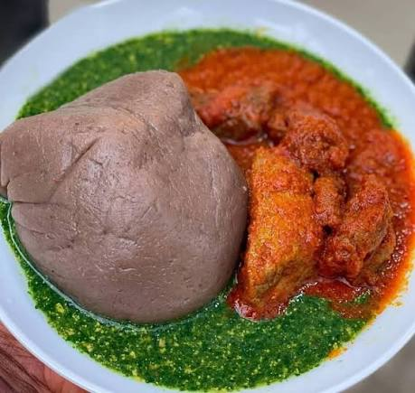

AMALA AND EWEDU

DESCRIPTION
Amala and Ewedu is a very popular food in west africa, expecially the
western part of Nigeria. It is known for its deliciousness regardless of who made it.
it is sometimes served with gbegiri(beans soup)
ingredients
- yam flour(elubo)
- fresh ewedu leaves
- potash(kaun)
- salt
- locust beans (iru)
- seasoning cube(optional)
- fresh tomatoes
- red bell peppers(tatashe)
- scotch bonnet (ata rodo)
- onions
- palm oil
- meat(goat meat,beef, or chicken)
- seasoning cubes
- curry,thyme(optional)
cooking steps for amala
- boil water in a pot
- reduce the heat to medium
- gradually sprinkle yam flour into the boiling water
- use a wooden spatula(omorogun) to stir continously
- stir until it becomes thick and smooth
- cover and allow to steam for a few minututes
- stir again until there are no lumps and dish into a plate
cooking steps for ewedu
- wash the ewedu thouroughly
- boil a small amount of water in a pot
- add potash,locust beans
- add the ewedu leaves
- cook for five minutes
- blend with a local broom(ijabe) or blender
- return to pot if blended
- add salt and seasoning cube
- stir and simmer for 1 minute
- serve on/beside the amala
cooking steps for red stew
- wash meat
- season with: salt,seasoning cube and onions
- boil until tender
- set meat and stock aside
- blend tomatoes,peppers,scoth bonnet and onions
- heat palm oil in a pot
- add sliced onions and fry lightly
- add the boiled pepper mix
- fry for 10-15 minutes, stirring often
- add meat stock
- add cooked meat
- add seasoning,salt,curry,and thyme
- simmer until oil floats on top
- add it to the combo of amala and ewedu...enjoy
back home